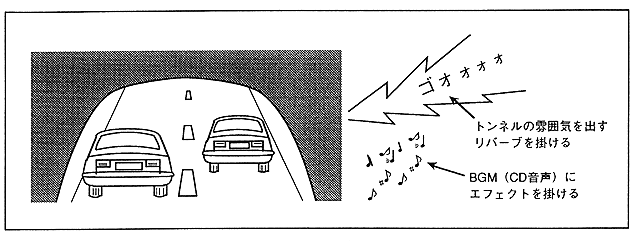

Since the DSP of SCSP can create multiple sound fields, you can set the sound field of the BGM and the sound field of the game itself to be different.
For example, taking a racing game as an example, you can apply reverb at the concert venue for BGM and at the same time reverb that creates the atmosphere in the tunnel for the game.
Figure 3.26 Tunnel and BGM reverb

Since not only the audio signal from the sound source but also the audio signal from the CD is input to the DSP, it is possible to apply effects to the audio of the CD. Also, since the CD output level can be controlled via SCSP, it is possible to balance the audio signal of the sound source section with the CD, so that the sound of the sound source section is not obscured by the sound of the CD. .